{kind=link}
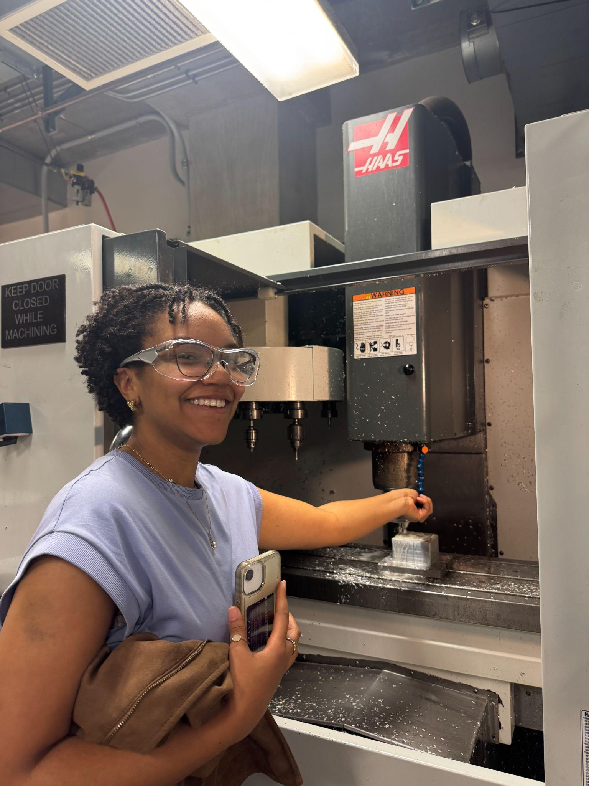

Injection-Molded Turtle: From CAD to Production
Designing, mold-engineering, CNC-machining, and injection-molding a two-piece plastic turtle from a blank sheet to a finished, assembled product - plus a metrology study on the parts it produced.
Injection Molding
CNC Machining (CAM)
DFM / DFA
Metrology
Status: Completed · Winter 2025 (ME 340-2)
Overview
Working with Jeremy Lu, Gabriela Norwood, and Natalia Yepes, our goal was to take a plastic part all the way from concept to production: design it in CAD, design and machine the injection mold on a three-axis CNC mill, and then actually injection-mold and assemble the final parts. We chose a small turtle as our part, split into two halves - top and bottom - that would be molded separately and joined afterward, since its shell, head, and legs gave us enough geometric complexity to work with real design-for-manufacturing constraints without exceeding what a three-axis mill and injection molding process could actually produce.
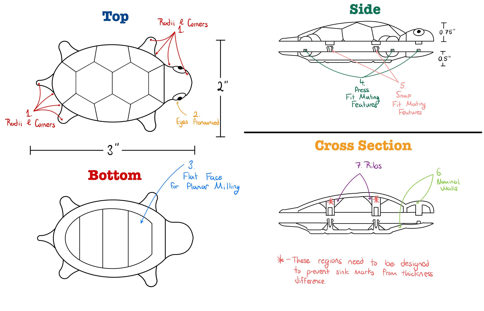
Our starting sketches: four orthographic views laying out the shell radii, eyes, press/snap-fit mating features, nominal wall thickness, and internal ribs we planned to design around.
Challenge
Almost every early design choice ran into a manufacturability wall. The turtle's eyes were cut because the overhang they created was impossible for a three-axis mill to reach. The tail was cut because it added mold complexity without adding real value to the part. The original snap-fit features were dropped in favor of press-fits only, since snap-fits demanded tighter geometric control during both machining and molding than we could reliably hit. What survived - filleted edges, round corners, a uniform 1/16" nominal wall thickness, and a 1° draft angle on every vertical face - existed specifically to keep the part machinable, moldable, and free of sink marks and warpage.
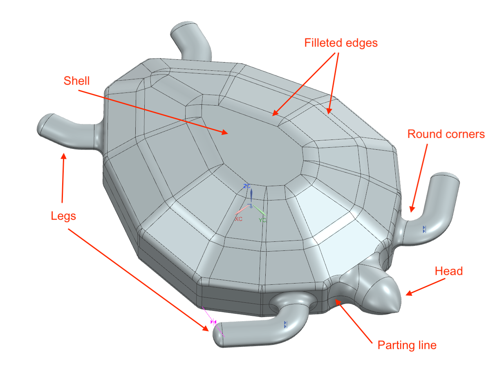
The features that survived DFM review: filleted edges and round corners to aid material flow and reduce stress concentrations, and a parting line chosen along the shell's natural, undercut-free edge.
Approach
The mold was split along the most symmetrical, undercut-free edge of the shell, which let every cavity feature be reached with standard end-milling operations. The runner system fed the cavity from two opposing entrances - one into the head, one into the far end of the shell - so molten plastic entered from both directions along the central axis and filled more evenly; a circular 0.25" runner minimized pressure loss, and gates sat 0.03" off the part to leave room for manual filing afterward. Cavity dimensions were also nudged to compensate for expected material shrinkage.
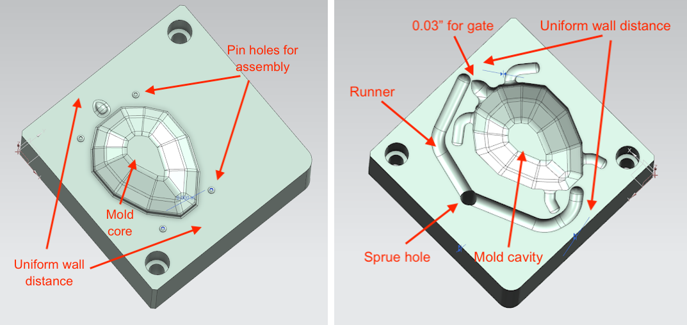
Core (left) and cavity (right) molds for the turtle's top half.
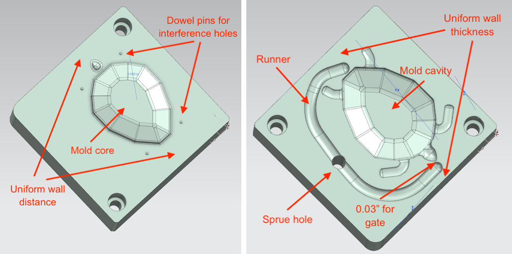
Core (left) and cavity (right) molds for the turtle's bottom half.
Assembly relied entirely on pin-hole interference fits sized with the standard press-fit stress equations, targeting a 30 MPa design stress with matched hub and shaft properties. That calculation called for a 0.09556" pin against a 0.0938" hole - close enough that our first attempt used a #51 (0.0595") drill for the holes, which promptly snapped mid-operation. We resized to a 3/32" (0.0938") drill for the holes and upsized the mating pin to 0.096" accordingly, which machined cleanly from then on, though the very small lips originally designed around each dowel hole didn't survive machining chatter fully intact.
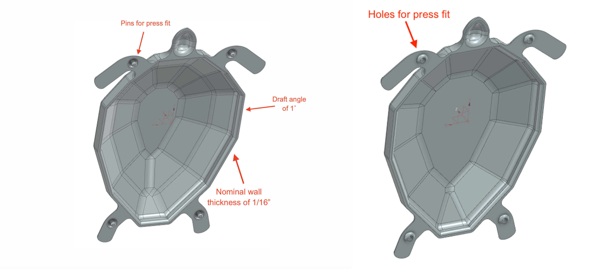
The interference-fit mating features: pins on the top half's legs and head, matching holes on the bottom half, sized to the press-fit calculation above.
Result
Injection molding itself took some real-time troubleshooting: the nozzle never fully reached its 450°F setpoint (settling closer to 400°F), which we compensated for with variable injection times, and short shots kept recurring until we traced them to pellet buildup in the feed chamber rather than temperature - clearing the chamber every three to four cycles fixed it. A more physical issue showed up at ejection: pulling the still-warm parts out by their thin leg features bent those legs slightly upward, which mattered more than it sounds like it should because the press-fit pins and holes were located right on those legs.
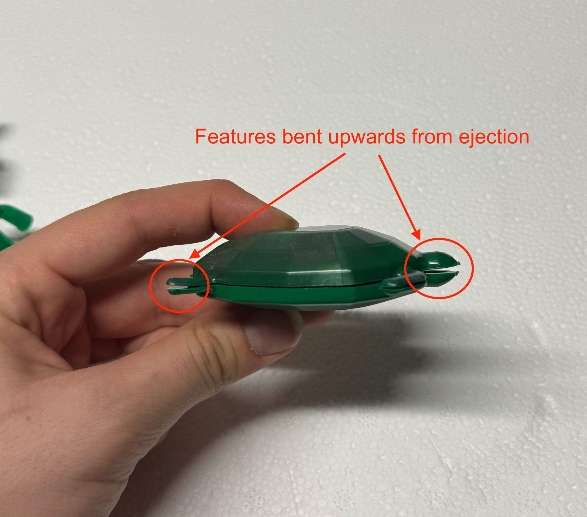
Legs bent upward from ejection - a direct cause of the looser-than-intended final assembly.
For the metrology study we measured overall shell width (nominal 1.80", spec limits 1.790"-1.810") across 20 top halves and 20 bottom halves, and built X-bar/R control charts from four teammates' caliper readings. Both halves' run charts flagged the process as statistically out of control - points beyond the control limits, runs of consecutive points on one side of the mean - even though the large majority of individual parts still landed inside the specification limits.
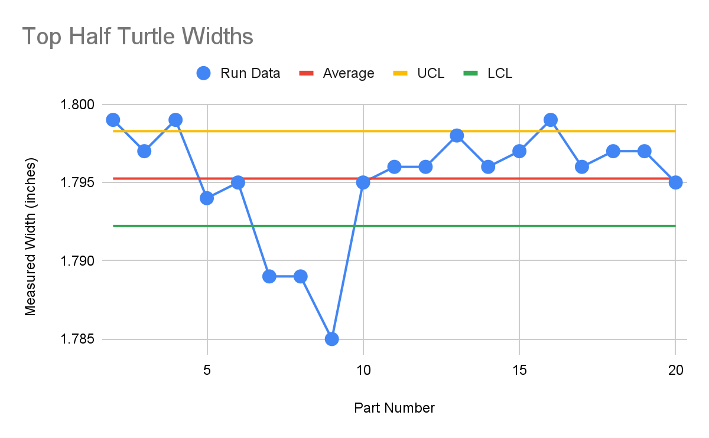
Top half: average 1.795", six points outside the control limits.
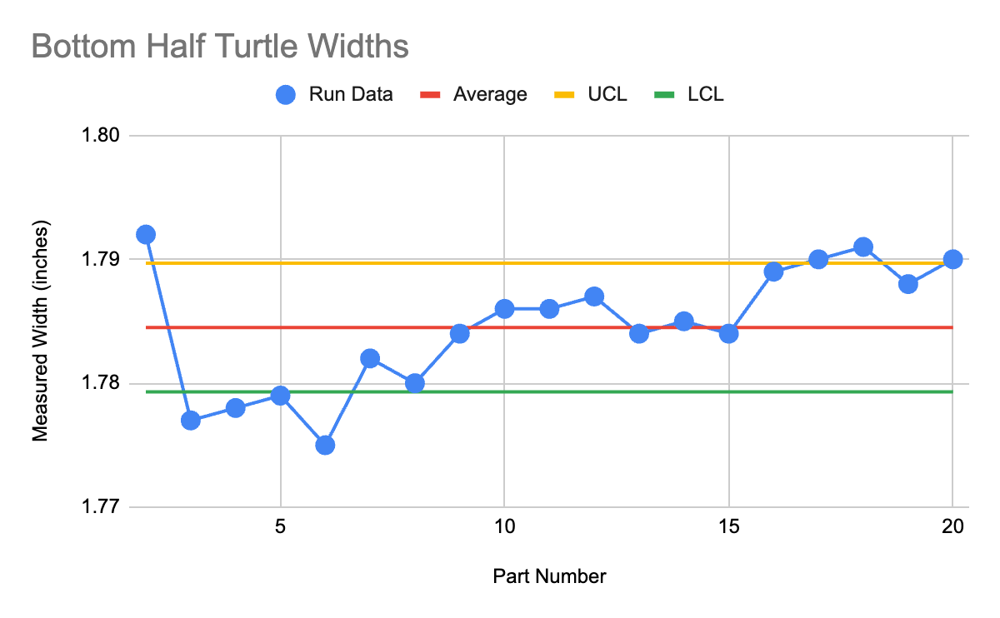
Bottom half: average 1.7845", a larger and more consistent undershoot of the 1.80" nominal.
The bottom half undershot the nominal dimension more than the top half did - likely some combination of shrinkage that wasn't fully compensated for in the mold design, the nozzle and barrel cooling further by the time the bottom halves were run (all top halves were molded first), and a small difference in actual mold cavity depth versus intended. Histograms of both distributions came out visibly non-normal, reinforcing that the instability in the run charts was a real process signal and not just measurement noise.
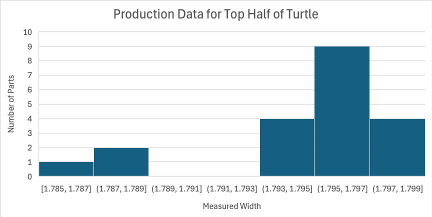
Top-half width distribution - skewed, not normal.
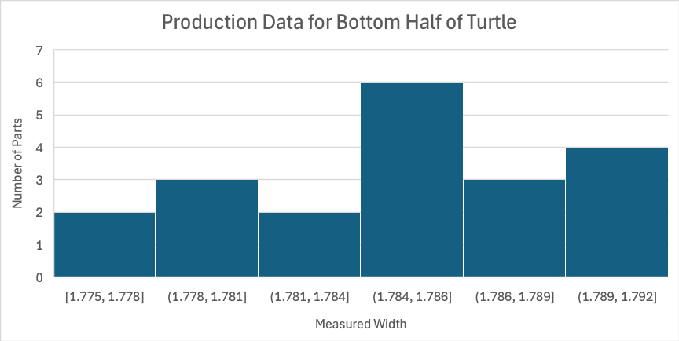
Bottom-half width distribution - shifted further below nominal.
{kind=link}
{kind=link}
{kind=link}
{kind=link}
{kind=link}